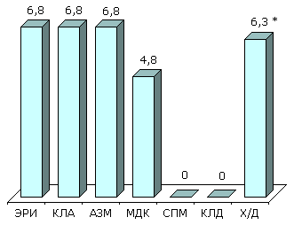
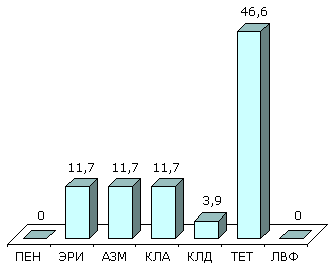
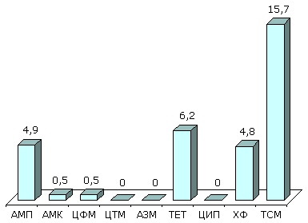
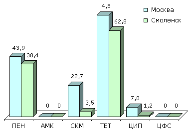
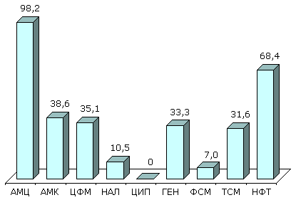

У здоровых детей дошкольного возраста из организованных коллективов (Москва, Смоленск и Ярцево) в среднем 7,5% пневмококков, выделенных из носоглотки, были умеренно резистентны к пенициллину (МПК 0,12-1 мг/л). Не было обнаружено штаммов с высоким уровнем резистентности (МПК ≥ 2 мг/л). Все штаммы с умеренной устойчивостью к пенициллину были чувствительны к амоксициллину/клавуланату. Уровень резистентности к макролидным антибиотикам составил 4,6%. Наиболее высокий уровень резистентности был отмечен к ко-тримоксазолу - 56,8% пневмококков.
По данным многоцентрового исследования «ПеГАС-1» умеренно резистентные к пенициллину штаммы S.pneumoniae составили 7%, при этом 2% штаммов имели МПК пенициллина ≥ 2 мг/л. Все штаммы с промежуточной устойчивостью к пенициллину сохраняли чувствительность к цефалоспоринам. Частота резистентности к эритромицину составила 6,2%. Наиболее существенной проблемой является устойчивость S.pneumoniae к тетрациклину (27,1%) и к ко-тримоксазолу (32,4%).
Результаты многоцентрового исследования резистентности пневмококков, выделенных у детей 1-14 лет с инфекциями ДП (исследование CARTI, 2001), представлены на рис. 1.

Рисунок 1. Резистентность (%) S.pneumoniae (CARTI, 2001 г.)
Многоцентровое исследование распространённости антимикробной резистентности клинических штаммов S.pneumoniae, проведённое в 2000-200 гг. Научно-методическим центром Минздрава РФ по мониторингу антибиотикорезистентности (ЦМАР) и НИИ антимикробной химиотерапии (г. Смоленск) в различных регионах России, выявило значительные региональные вариации лекарственной устойчивости (табл. 1). Штаммы пневмококка со сниженной чувствительностью к пенициллину встречались редко, за исключением центров из Сибири, где были обнаружены не только умереннорезистентные к пенициллину изоляты, но и штаммы с МПК 4-8 мг/л.
Таблица 1. Резистентность (%) клинических штаммов S.pneumoniae в различных регионах России (2000-2001 гг.)
Резистентность пневмококков к макролидам была обусловлена, преимущественно, активным выведением антибиотиков из бактериальных клеток и изменением мишени действия (метилирование рибосом). Однако впервые были обнаружены штаммы с новыми механизмами устойчивости (мутации в 23S рРНК и рибосомальных белков L4).
Проспективное исследование резистентности пневмококков, выделенных при инфекциях ДП у госпитализированных пациентов в нескольких стационарах Москвы в 1998-1999 гг. и 2000-2001 гг., продемонстрировало некоторое снижение частоты резистентности к пенициллину и, в меньшей степени, к макролидам (табл. 2).
Таблица 2. Резистентность (%) S.pneumoniae, выделенных в стационарах Москвы в 1998-2001 гг.
Streptococcus pyogenes отличается высокой и полной чувствительностью к пенициллинам и цефалоспоринам. β-лактамы остаются единственным классом антибиотиков, к которым у S.pyogenes не развилась резистентность. Актуальной проблемой является устойчивость к макролидам, которая в некоторых регионах мира превышает 30%.
Результаты первого многоцентрового исследования резистентности S.pyogenes в России, проведённого в рамках исследования ПеГАС-1 в 2000 г., представлены на рис. 2.

Рисунок 2. Резистентность (%) S.pyogenes (ПеГАС-1, 2000 г.)
Многоцентровое исследование резистентности клинических штаммов S.pyogenes, проведённое в 2000-2001 гг., позволило изучить распространенность устойчивости прежде всего к макролидам в различных регионах России (табл. 3). Частота резистентности к эритромицину варьировала и достигала 11,4%, при этом не было обнаружено штаммов, устойчивых к телитромицину, представителю нового класса антибиотиков - кетолидов. Почти в 90% случаев резистентность к макролидам была обусловлена метилированием рибосом, в остальных случаях она была связана с активным выведением (эффлюксом) антибиотика из клетки.
Таблица 3. Резистентность (%) клинических штаммов S.pyogenes, 2000-2001 гг.
Основным механизмом устойчивости H.influenzae к аминопенициллинам (ампициллину и амоксициллину) является продукция плазмидных β-лактамаз. Согласно данным, полученным при исследовании в Москве, Смоленске и Ярцево в 1998 г., продукция β-лактамаз пока не является существенной проблемой: резистентность к ампициллину составила 2,3%.
Наибольшее значение имеет резистентность H.influenzae к ко-тримоксазолу, которая составила 20,9% (рис. 3).

Рисунок 3. Резистентность (%) клинических штаммов H.influenzae (ПеГАС-1, 2000 г.)
Определение чувствительности гонококков представляет трудную задачу и требует использования специальных питательных сред, поэтому в России практически отсутствуют достоверные данные о резистентности N.gonorrhoeae к антимикробным препаратам.
Результаты исследования чувствительности гонококков в Москве и Смоленске в 2000 г. представлены на рис. 4. Примечателен высокий уровень резистентности гонококков к пенициллину, тетрациклину. Обращает внимание устойчивость гонококков в Москве к спектиномицину (23%) и ципрофлоксацину (7%), причём, в последнем случае за счёт резистентных, а не умеренно резистентных, штаммов.

Рисунок 4. Резистентность (%) N.gonorrhoeae (2000 г.)
Escherichia coli является наиболее частым возбудителем внебольничных инфекций МВП. На рис. 5 представлены результаты многоцентровых исследований резистентности к антибиотикам грамотрицательных возбудителей инфекций МВП у женщин с острым и рецидивирующим циститом, находившихся на амбулаторном лечении (исследование UTIAP). В 1998 г. исследование проводилось в Москве, Смоленске и Новосибирске; в 2001 г. участвовали центры из Москвы, Санкт-Петербурга, Смоленска, Ростова-на-Дону, Екатеринбурга, Новосибирска.
Как следует из представленных данных, наиболее высокий уровень резистентности наблюдался к ампициллину (33,3%) и ко-тримоксазолу (18,4%). Наименьшая устойчивость отмечалась к фторхинолонам.
При сравнительном анализе результатов исследований в 1998 г. и в 2000 г. отмечается повсеместный небольшой рост резистентности ко всем исследовавшимся АМП, в том числе к фторхинолонам (ципрофлоксацин, норфлоксацин).
В 2000 г. было проведено первое многоцентровое исследование резистентности к АМП возбудителей внебольничных инфекций МВП у детей - исследование АРМИД-2000. Наиболее частым возбудителем во всех центрах-участниках была E.coli (табл. 4). Обращает на себя внимание высокий уровень устойчивости E.coli к амоксициллину (31-67,6%) и ко-тримоксазолу (17,2-45,9%). Наименьшая резистентность отмечалась к амоксициллину/клавуланату, фосфомицину, ципрофлоксацину, налидиксовой кислоте, гентамицину и нитрофурантоину.
Таблица 4. Резистентность (%) E.coli, выделенных у детей с внебольничными инфекциями МВП (АРМИД-2000).
Вторым по частоте возбудителем инфекций МВП у детей в амбулаторных условиях была K.pneumoniae (рис. 6), наибольшей активностью в отношении которой обладали ципрофлоксацин, налидиксовая кислота и фосфомицин.

Рисунок 6. Резистентность (%) K.pneumoniae, выделенных у детей с амбулаторными ИМП (АРМИД-2000)
Результаты многоцентрового исследования чувствительности шигелл, проведенного в 1998-2000 гг., представлены в табл. 5 Наибольшей резистентностью отличались штаммы S.flexneri, которые практически полностью были устойчивы к аминопенициллинам, ко-тримоксазолу, тетрациклину и хлорамфениколу, с незначительными вариациями в различных центрах. Все штаммы Shigella spp. были чувствительны к ципрофлоксацину, норфлоксацину, налидиксовой кислоте (исключение - Москва, где 2,3% штаммов были устойчивы) и цефотаксиму.
Таблица 5. Резистентность (%) Shigella spp. в различных регионах России, 1998-2000 гг.
Представленные в табл. 6 данные о резистентности шигелл, выделенных в Екатеринбурге, также показывают, что S.sonnei были менее резистентны к пенициллинам и тетрациклину, по сравнению с S.flexneri. Исключение составляет ко-тримоксазол, к которому резистентность у S.sonnei была значительно выше. Особый интерес представляют данные о появлении резистентности шигелл к ципрофлоксацину.
Таблица 6. Резистентность (%) Shigella spp. (Екатеринбург, 1999 г.)
Однако представленные данные не отражают всей картины антибиотикорезистентности в России. Так в Санкт-Петербурге в 1996 г. были выделены клинические штаммы S.typhimurium и изоляты из окружающей среды, резистентные к цефотаксиму. Молекулярный анализ этих штаммов, а также цефотаксиморезистентных изолятов из стационаров Белоруссии, показал, что они представляют собой один клон, а резистентность к β-лактамам обусловлена одновременной продукцией БЛРС типа CTX-M и пенициллиназы типа SHV.
Одной из основных ведущих причин неэффективности терапии туберкулёза является увеличение частоты множественнорезистентных M.tuberculosis, то есть устойчивых минимум к изониазиду и рифампицину.
В 1991-1994 гг. в девяти областях северо-западного региона России (Республика Коми, Псков, Новгород, Санкт-Петербург и Ленинградская область, Карелия, Вологда, Архангельск, Мурманск) частота выделения M.tuberculosis, первично резистентных к одному и более противотуберкулёзным препаратам, увеличилась с 17% до 24%. Уровень вторичной резистентности существенно не изменился и составил около 50%.
В Ленинградской области в 1992-1994 гг. первичная резистентность составила 29,2%, частота выделения первичных множественнорезистентных штаммов достигала 5,1% без значительных колебаний в течение всего периода исследования. Вторичная устойчивость внелёгочных изолятов в 1989-1994 гг. составила 45,6% по сравнению с 69,5% у штаммов, выделенных из респираторных образцов. Распространённость вторичных множественнорезистентных штаммов, полученных из респираторных образцов, значительно увеличилась и составила 33% по сравнению с 8,8% для внелёгочных штаммов микобактерий.
В Ивановской области при тестировании 222 штаммов первичная множественная резистентность составила в 1998 г. 9%, а частота множественноустойчивых штаммов среди 54 изолятов, выделенных у пациентов, получавших ранее противотуберкулёзные препараты, составила 25,9%.
В Томске (1995-1996 гг.) первичная резистентность микобактерий достигала 27,7%, множественная резистентность - 3,4%. Исследования, проведённые в 1999 г., выявили уже 6,5 % (27/417) множественноустойчивых штаммов у пациентов, не получавших ранее терапию, и 26,7 % (62/232) у больных, ранее лечившихся противотуберкулёзными средствами.
Приведённые данные показывают, что в последние годы наблюдается выраженная тенденция роста множественной устойчивости в целом и, особенно, к двум основным препаратам для лечения туберкулёза: изониазиду и рифампицину.
Иванов А.С., Кречикова О.И., Сухорукова М.В., Аксенова Г.В., Шахмарданов М.З., Кветная А.С., Страчунский Л.С. Мониторинг антибиотикорезистентности шигелл в России. Юбилейная научно-практическая конференция, посвященная 80-летию образования кафедры инфекционных болезней ММА им. И.М. Сеченова «Инфекционные и паразитарные болезни в современном обществе. Клинико-лабораторное обеспечение инфектологии», тезисы докладов. Москва. - 2003. - С.86.
Шевелев А.Н., Сивая О.В., Фаращук А.Н. Резистентность штаммов K.pneumoniae, выделенных у детей с амбулаторными инфекциями мочевыводящих путей (АИМП). IV международная конференция МАКМАХ «Антимикробная терапия», 2001.
Ahmetova L.I., Babkin P.A., Kogan M.I. e.a. Resistance of E.coli isolates from women with uncomplicated community-acquired urinary tract infections in Russia: result of multicenter study UTIAP // UTI symposium «Hot topics in urinary tract infections», January 24-26 2003, Budapest, Hungary. - Abs. A5.
Grudinina S.V., Sidorenko S.V., Rezvan S.P., Kotosova L.K., Krotova L.A., Tishkov V.I., Fedorchuk V.V. Five year surveillance of Streptococcus pneumoniae resistance in Moscow, Russia. 43rd ICAAC Abstracts, American Society for Microbiology, September, 2003, p.132. Abstract: C2-945.
Kozlov R.S., Bogdanovitch T.M., Appelbaum P.C., Ednie L., Stratchounski L.S., Jacobs M.R., Bozdogan B. Antistreptococcal activity of telithromycin compared with seven other drugs in relation to macrolide resistance mechanisms in Russia. Antimicrob Agents Chemother 2002; 46: 2963-8.
Stratchounski L., Kozlov R., Bogdanovitch T., Sivaja O. Activity of macrolides, clindamycin and quinupristin/dalfopristin against clinical strains of S.pneumoniae isolated from children with community-acquired respiratory tract infections (CARTI). In: 6th International Conference on the Macrolides, Azalides, Streptogramins, Ketolides and Oxazolidinones; 2002 Jan 23-25, Bologna, Italy. p.91 Abstract: 3.11.
Stratchounski L., Shevelev A., Korovina N., Edelstein I., Kozlova L., Zorkin S., Katosova L., Papajan A., Marusina N., Vjalkova A., Agapova E. Resistance of E.coli isolated from children with community-acquired urinary tract infections (CAUTIs) in Russia: Results of multicenter study «ARMID». In: 42nd Interscience Conference on Antimicrobial Agents and Chemotherapy; 2002 Sep 27-30, San Diego, CA, USA. P.253. Abstract: G-1469.


")